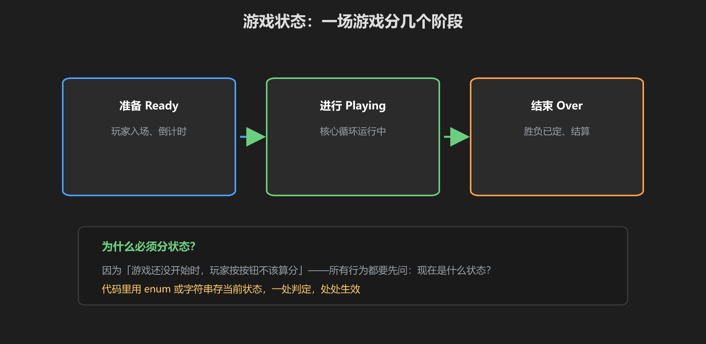
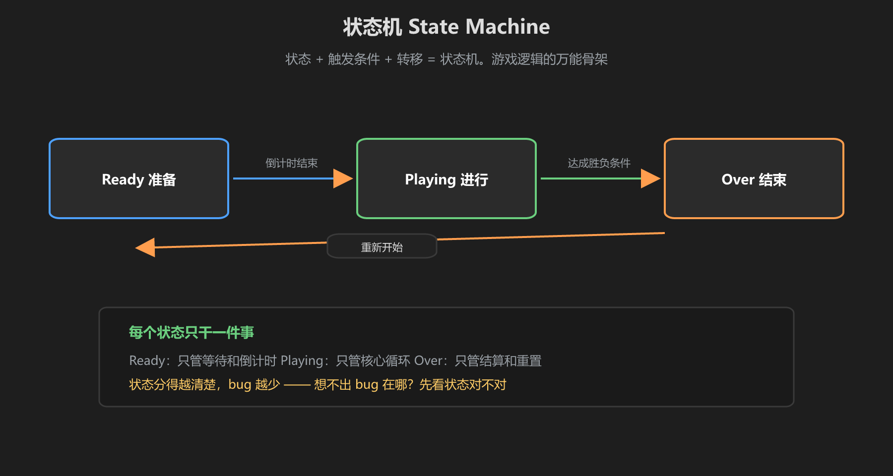
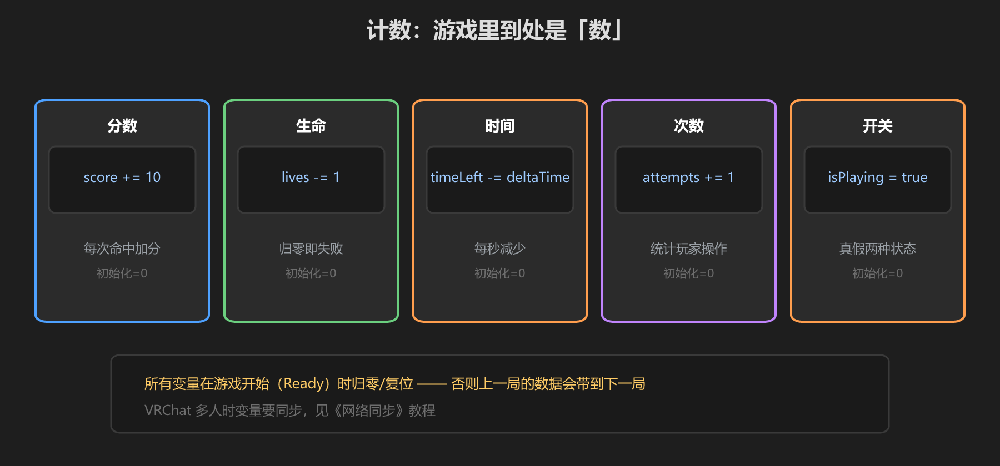

第 2 篇：状态与变量 — 游戏的大脑
游戏和"动画片"的区别是：游戏有状态。这一篇解决"游戏现在进行到哪一步了"，这是所有机制的地基。
1. 游戏状态：三个阶段

图：准备 → 进行 → 结束，任何游戏都逃不过这三个阶段
| 状态 | 做什么 | 玩家的感觉 |
|---|---|---|
| Ready 准备 | 等玩家入场、倒计时 3、2、1 | "要开始了" |
| Playing 进行 | 核心循环运行，接受输入和计分 | "在玩" |
| Over 结束 | 结算胜负、停止输入、准备重置 | "结束了" |
为什么必须分状态？因为"游戏还没开始时按按钮"不该算分。所有行为都要先问：现在是什么状态？这就是防作弊和防 bug 的第一道闸门。
2. 状态机 State Machine

图：状态 + 触发条件 + 转移，用箭头画出游戏的流程
状态机 = 状态 + 条件 + 转移。规则是：每个状态只干一件事。
public enum GameState { Ready, Playing, Over }
public GameState state = GameState.Ready;
// 倒计时结束 → 进入 Playing
public void StartGame() { state = GameState.Playing; }
// 达成胜负条件 → 进入 Over
public void EndGame() { state = GameState.Over; }
// 任何地方都能查状态：
public bool IsPlaying() { return state == GameState.Playing; }3. 变量：游戏里到处是"数"

图：分数、生命、时间、次数、开关 —— 游戏逻辑就是操作这些数
- 分数：`score += 10`，命中加分
- 生命：`lives -= 1`，归零失败
- 时间：`timeLeft -= Time.deltaTime`，每秒减少
- 开关：`isPlaying = true/false`，两种状态的布尔值
铁律：所有变量在游戏开始（Ready）时归零复位。否则上一局的数据会带进下一局 —— 这是新手最常见的 bug。
学前检查清单
- 理解三个游戏状态：准备 / 进行 / 结束
- 能用 enum 写一个状态机
- 理解"每个状态只干一件事"
- 知道变量要在一局开始时复位